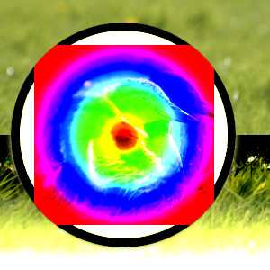
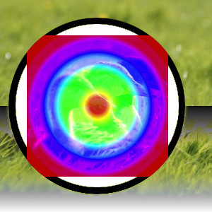
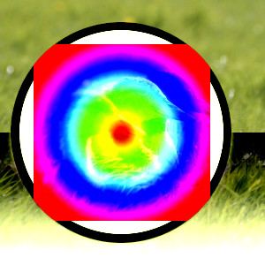

The “Contrast” group contains layer modes that enhance contrast.
- Overlay
-
Overlay mode multiplies the upper layer with two times the lower layer when the component value of the lower layer is less than 0.5. When the component value is greater than or equal to 0.5, it inverts the components of the lower and upper layer, multiplies those values, then multiplies with 2.0, and then inverts the result. It darkens the image, but not as much as with “Multiply” mode.
- Soft light
-
Soft light is not related to “Hard light” in anything but the name, but it does tend to make the edges softer and the colors not so bright. It is similar to “Overlay” mode. Soft light has a more complicated formula. It uses the result of Multiply mode, then multiplies that with the inverse of the lower layer; then adds to that the multiplication of the result of Screen mode with the lower layer.
- Hard light
-
Hard light mode is rather complicated because the equation consists of two parts, one for darker color components and one for lighter ones. If the color component of the upper layer is greater than 0.5, the inverse of the lower layer is multiplied with the inverse of: the upper layer minus 0.5 times 2.0. Then the result of this is compared with the inverse of this result and the lower value of both is used. If the color component of the upper layer is less than or equal to 0.5, the lower layer is multiplied with 2 times the upper layer. The result of that is compared with 1.0 and the lower value of that is used. You might use this mode to combine two photographs and obtain bright colors and sharp edges.
- Vivid light
-
Figure 8.27. Example for layer mode “Vivid light”

Top layer at 100% opacity using “Vivid Light” mode.
Vivid light mode, increases contrast very strongly, especially in highlights and shadows. The effect is a combination of Burn (in the shadows) and Dodge (in the highlights), apart from the doublings in the denominators. This mode also consists of two parts depending on the color component value, where 0.5 is the limit, the same as with Hard light. If the upper layer value is smaller than or equal to 0.5: divide the inverse of the lower layer by 2 times the upper layer and invert the result. If the result is less than zero, return zero. If the upper layer value is greater than 0.5: divide the lower layer by two times the inverse of the upper layer. If the result is larger than 1.0, return 1.0.
- Pin light
-
Figure 8.28. Example for layer mode “Pin light”

Top layer at 100% opacity using “Pin Light” mode.
Pin light mode is a combination of the Darken and Lighten modes. Mid-tone regions remain almost uninfluenced. If the component value of the upper layer is greater than 0.5: subtract 0.5 from the upper layer and multiply by 2.0. Then the result is the maximum from this value and the value of the lower layer. If the component value is less than or equal to 0.5: take the minimum value of the lower layer and two times the upper layer.
- Linear light
-
Figure 8.29. Example for layer mode “Linear light”

Top layer at 100% opacity using “Linear Light” mode.
Linear light mode increases contrast slightly less than vivid light. It resembles Burn, but with twice the impact on the foreground's tonal values. If the component value is less than or equal to 0.5: the result is the lower layer plus two times the upper layer minus 1.0. If the component value is greater than 0.5: subtract 0.5 from the upper layer and multiply by 2.0, then add the lower layer.
- Hard mix
-
Hard mix mode only contains the six primary colors, black and white. The upper and lower layer components are added together. Any component which is more than or equal to 1.0 is set to 1. Anything else is set to 0.